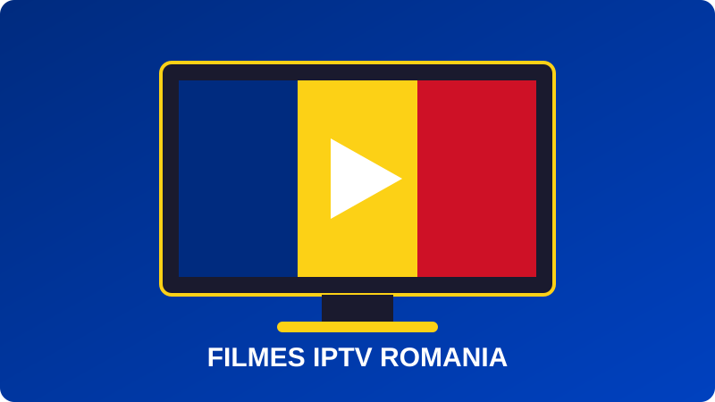

Daca locuiesti in afara tarii si iti lipsesc filmele si serialele de acasa, probabil ai tastat deja filmes iptv in Google. Rezultatele sunt amestecate: liste gratuite, aplicatii dubioase si promisiuni care nu se tin. De fapt, vrei un lucru simplu: sa deschizi televizorul si sa gasesti filme bune, in limba romana, fara blocaje si fara bataie de cap.
In acest ghid explicam ce inseamna filmes iptv pentru publicul romanesc, ce tipuri de filme si seriale poti urmari, pe ce dispozitive merge, ce viteza de internet ai nevoie si cum eviti listele nesigure. Vei vedea si cum functioneaza serviciul Romania IPTV, creat pentru romanii din tara si din diaspora, cu canale romanesti de film, seriale, copii si divertisment. La final gasesti raspunsuri scurte la cele mai frecvente intrebari si o cale rapida de a cere un test gratuit.
Ai citit si alte ghiduri de pe blog? Poti incepe cu Fast IPTV Romania: Canale Romanesti Rapide 2026, apoi continua cu Fast IPTV: Canale Romanesti Rapide, Fara Blocaje 2026. Acum sa luam lucrurile pe rand.

Cuprins
- Ce inseamna filmes iptv?
- Ce fel de filme poti urmari prin IPTV
- Canale romanesti de filme si seriale
- Pe ce dispozitive vezi filme prin IPTV
- Ce viteza de internet ai nevoie pentru filme
- Filme gratuite pe liste IPTV sau abonament verificat
- De ce sa alegi Romania IPTV pentru filme
- Cum alegi un serviciu bun pentru filme
- Filme romanesti pentru diaspora: ce trebuie sa stii
- Intrebari frecvente
- Concluzie
Ce inseamna filmes iptv?
Expresia filmes iptv vine din limbi precum portugheza si spaniola, unde „filmes” inseamna pur si simplu filme. In practica, cine cauta asa ceva vrea sa vada filme prin IPTV, adica prin televiziune livrata pe internet, fara antena, fara parabola si fara cablu. Pentru publicul din Romania si din diaspora, ideea este aceeasi: filme si seriale in limba romana, disponibile oricand, pe orice ecran.
IPTV si filmele: cum se leaga
IPTV (Internet Protocol Television) transmite canalele TV prin conexiunea ta de internet. Filmele ajung la tine in doua moduri: prin canalele care difuzeaza filme non-stop (de exemplu canale dedicate peliculelor, serialelor si comediilor) si prin biblioteca la cerere (VOD), unde alegi tu ce vrei sa vezi si cand. Un serviciu bun ofera ambele variante, plus ghid TV (EPG) ca sa stii ce ruleaza in fiecare seara.
De ce cauta romanii filme prin IPTV
Romanii plecati in Italia, Spania, Germania, Anglia sau Belgia au o problema simpla: platformele locale nu au canalele si continutul de acasa. Cu Romania IPTV primesti canalele romanesti de film, seriale si divertisment direct pe televizorul din sufragerie, indiferent de tara in care locuiesti.
Ce fel de filme poti urmari prin IPTV
Biblioteca unui serviciu IPTV serios acopera mai multe categorii. Cand cauti filmes iptv, merita sa stii ce poti gasi de fapt.
Filme romanesti si productii locale
Canalele romanesti difuzeaza zilnic filme artistice, comedii si drame. Multe dintre ele au si arhive la cerere, unde regasesti productii vechi si noi, de la clasicele comedii romanesti pana la peliculele recente din cinematografia de la noi.
Seriale si telenovele
Serialele turcesti, telenovelele si productiile locale ale marilor televiziuni sunt printre cele mai urmarite de diaspora. Cu IPTV poti recupera un episod ratat, ceea ce cablul clasic din strainatate nu iti permite.
Filme internationale subtitrate sau dublate
Canalele de filme straine din Romania ruleaza peliculele in original, cu subtitrare in romana. Este o varianta buna pentru familii bilingve, unde copiii invata limba si ascultand filme.
Desene animate si filme pentru copii
Canalele pentru copii difuzeaza desene si filme in limba romana. Pentru parintii din diaspora este una dintre cele mai bune metode de a pastra limba vie in casa.
Canale romanesti de filme si seriale
Lista exacta difera de la un furnizor la altul, dar un pachet complet include in general urmatoarele categorii de canale:
| Categorie | Ce urmaresti | Util pentru |
|---|---|---|
| Canale generaliste | Filme de seara, seriale, emisiuni | Intreaga familie |
| Canale de filme | Pelicule artistice non-stop | Cinefili |
| Canale de seriale | Telenovele si seriale turcesti | Seara, dupa munca |
| Canale pentru copii | Desene si filme animate | Copii si parinti |
| Canale tematice | Documentare, istorie, calatorii | Public curios |
Cum gasesti repede un film
Aplicatiile IPTV au ghid TV (EPG) cu programul pe zile. Cauti dupa gen, dupa ora sau dupa canal si vezi imediat ce urmeaza. Multe aplicatii permit si inregistrarea sau revederea emisiunilor din ultimele zile.
Canale in HD si Full HD
Pentru filme conteaza calitatea imaginii. Cere intotdeauna un serviciu care ofera canalele principale in HD, pentru ca pe un televizor mare diferenta fata de calitatea standard se vede imediat. Mai multe detalii despre pachete gasesti in ghidul nostru iptv romania.
Pe ce dispozitive vezi filme prin IPTV
Unul dintre marile avantaje ale IPTV este flexibilitatea. Aceeasi lista de canale merge pe mai multe echipamente.
Smart TV si box-uri Android
Cea mai buna experienta pentru filme este pe televizor. Un Smart TV compatibil sau un box Android TV, un Fire TV Stick ori un Apple TV iti ofera ecran mare, sunet bun si telecomanda simpla.
Telefon si tableta
Pe Android si iOS poti instala o aplicatie IPTV si urmaresti filme in tren, in pauza de pranz sau in vacanta. Este ideal cand ai si o conexiune Wi-Fi stabila.
Laptop si calculator
Prin playere precum VLC sau aplicatii dedicate, poti vedea aceleasi canale si pe computer. Este util daca lucrezi sau studiezi in strainatate si vrei un film seara, in camera.
Cate dispozitive in acelasi timp
Verifica numarul de conexiuni simultane. Daca doua persoane vor sa vada filme diferite, ai nevoie de minimum doua conexiuni.
Ce viteza de internet ai nevoie pentru filme
Filmele cer o conexiune stabila, mai ales in HD. Iata valorile orientative:
| Calitate | Viteza recomandata |
|---|---|
| SD | 3-5 Mbps |
| HD (720p) | 8-10 Mbps |
| Full HD (1080p) | 15-20 Mbps |
| 4K | 25-35 Mbps |
Cum eviti blocajele in timpul filmului
Foloseste cablu Ethernet daca televizorul sau boxul se afla langa router. Daca ramai pe Wi-Fi, alege banda de 5 GHz si evita sa ai descarcari mari in acelasi timp. Citeste si fast iptv romania, unde explicam in detaliu cum pornesti rapid canalele si cum reduci intarzierile.
Ce faci daca imaginea se opreste
Reporneste aplicatia, verifica viteza reala de internet si reconecteaza routerul. Daca problema persista, cere sprijin furnizorului: un serviciu serios raspunde repede, inclusiv pe WhatsApp.
Filme gratuite pe liste IPTV sau abonament verificat
Orice cautare de tipul filmes iptv te duce rapid la liste gratuite si fisiere M3U. Merita sa privesti lucrurile realist.
Avantajele unui abonament verificat
- canale romanesti stabile, in HD
- ghid TV si arhiva pentru filme ratate
- suport in limba romana
- test gratuit inainte sa platesti
Un serviciu serios iti permite sa testezi calitatea inainte de plata. Pe aceeasi tema poti citi si fast iptv sau ghidul despre Eurosport IPTV: Sport si Canale Romanesti in 2026, care arata cum se compara pachetele cu continut sportiv si de filme.
Alte servicii din domeniu
Daca vrei sa vezi cum arata ofertele altor piete, poti consulta greek iptv pentru canale grecesti sau tilaa iptv pentru o oferta in limba finlandeza. Principiul este acelasi: alegi dupa stabilitate, suport si test gratuit.
De ce sa alegi Romania IPTV pentru filme
Romania IPTV este creat pentru romanii din Romania si din diaspora. Ce primesti concret:
- canale romanesti de filme, seriale, copii si divertisment
- calitate HD si flux stabil, fara blocaje la ore de varf
- activare rapida, direct pe WhatsApp
- compatibilitate cu Smart TV, Android, Fire TV, iOS si PC
- suport in limba romana
Cum comanzi si testezi
Scrii un mesaj pe WhatsApp, spui ce dispozitiv folosesti si primesti rapid datele de acces. Poti verifica filmele si canalele inainte sa decizi. Este cea mai simpla cale de a transforma cautarea ta de filmes iptv intr-un televizor care chiar functioneaza.
Sfaturi pentru prima seara
Instaleaza aplicatia, verifica ghidul TV, salveaza canalele preferate si fa un test pe un film lung, ca sa vezi cum se comporta fluxul. Daca ai un box Android, activeaza si actualizarile automate ale aplicatiei.
Cum alegi un serviciu bun pentru filme
Piata este plina de oferte, iar diferentele se simt abia dupa prima seara. Inainte sa te decizi, parcurge aceasta lista scurta de verificare.
Teste, suport si transparenta
Un furnizor de incredere iti ofera un test, iti explica ce primesti si raspunde la mesaje in aceeasi zi. Daca nu gasesti nicio forma de contact, nu exista test sau cineva iti cere plata prin metode neobisnuite, cauta in alta parte.
Stabilitate la ore de varf
Filmele de seara aduna cei mai multi spectatori, tocmai cand serverele sunt cele mai incarcate. Testeaza serviciul intre 20:00 si 23:00, nu dimineata, ca sa vezi cum se comporta cu adevarat.
Aplicatie simpla si actualizari
O aplicatie usor de folosit conteaza mai ales pentru parintii si bunicii care vor sa vada un film fara explicatii tehnice. Cauta o interfata clara, cu favorite, cautare si ghid TV, plus actualizari regulate.
Pretul raportat la ce primesti
Nu alege dupa cel mai mic pret. Compara numarul de canale romanesti, calitatea imaginii, numarul de conexiuni si perioada de abonament. Un abonament putin mai scump, dar stabil, iti economiseste nervi si timp in fiecare seara de film.
Filme romanesti pentru diaspora: ce trebuie sa stii
Romanii din strainatate au nevoie de continut care sa-i apropie de acasa. Filmele si serialele fac asta mai bine decat orice. Iata cateva lucruri de retinut.
Fusul orar si programul
Un film difuzat la ora 21:00 in Romania ruleaza la 20:00 in Europa de Vest si la 19:00 in Marea Britanie. Prin arhiva si functia de revedere poti urmari filmul cand ai timp.
Limba si subtitrarile
Filmele romanesti se vad cu sunet original. Pentru productiile straine, subtitrarea in romana ramane standardul, iar copiii din diaspora pot folosi desenele animate dublate pentru a exersa limba.
Conexiunea si legalitatea
Alege un serviciu cu transparenta fata de client si fara promisiuni nerealiste. Un pret mult prea mic sau o oferta „gratuita pentru totdeauna” ar trebui sa te puna pe ganduri.
Intrebari frecvente despre filmes iptv
Ce inseamna filmes iptv?
Este o cautare pentru filme vazute prin IPTV, adica prin televiziune livrata pe internet. Cuvantul „filmes” inseamna filme in portugheza si spaniola.
Pot vedea filme romanesti prin IPTV in strainatate?
Da. Cu un abonament IPTV pentru canale romanesti poti vedea filme, seriale si emisiuni in limba romana in orice tara, atat timp cat ai internet.
Ce viteza de internet am nevoie pentru filme in HD?
Pentru HD sunt suficiente 8-10 Mbps, iar pentru Full HD recomandam 15-20 Mbps. Conexiunea prin cablu este mai stabila decat Wi-Fi.
Merg filmes iptv pe Smart TV?
Da, pe majoritatea Smart TV-urilor, box-urilor Android, Fire TV Stick si Apple TV, plus pe telefon, tableta si calculator.
Sunt sigure listele IPTV gratuite?
De obicei nu. Sunt instabile, fara suport si pot contine linkuri riscante. Un abonament verificat cu test gratuit este alegerea mai sigura.
Pot revedea un film sau un episod ratat?
Depinde de canal si de pachet, dar multe servicii ofera arhiva si functie de revedere pentru emisiunile din ultimele zile.
Cate dispozitive pot folosi in acelasi timp?
Depinde de abonament. Daca vrei sa vezi filme diferite pe doua ecrane, alege un pachet cu minimum doua conexiuni simultane.
Cum primesc un test gratuit?
Scrie-ne pe WhatsApp, spune-ne ce dispozitiv folosesti si iti trimitem rapid datele pentru un test, fara obligatii.
Vrei un test gratuit pentru filme romanesti?
Scrie-ne pe WhatsApp si primesti rapid acces la canalele romanesti de filme si seriale, in HD.
Cere test pe WhatsAppConcluzie
Cautarea filmes iptv are un raspuns clar pentru publicul romanesc: alege un serviciu stabil, cu canale romanesti de film si seriale, ghid TV si suport real. Evita listele gratuite instabile, verifica viteza de internet si testeaza inainte sa platesti. Cu Romania IPTV ai tot ce trebuie ca sa vezi filmele de acasa in orice tara. Citeste si iptv romania pentru imaginea de ansamblu si scrie-ne pe WhatsApp cand vrei sa incepi.